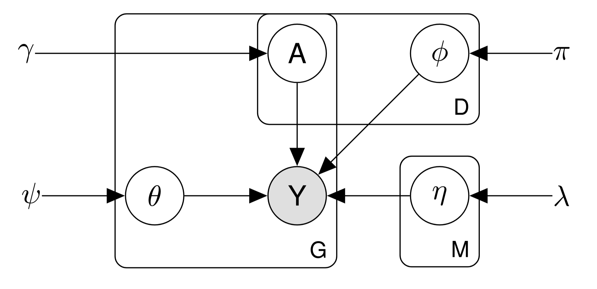

Models
DAMUTA provides several latent variable models for probabilistic mutational signature analysis. Here, models are visualized with graphviz.
PyMC3 has some tutorials to help you get familiar with dirichlet-multinomial models.
Choosing a Model
Overview of available models (Lda, TandemLda, HierarchicalTandemLda)
Damuta offers three main types of models:
Lda (Latent Dirichlet Allocation):
Provided primarily as a baseline for comparison with other probabilistic models.
Not recommended for fitting COSMIC activities in practice.
TandemLda (Tandem Latent Dirichlet Allocation):
Use when you don’t have hierarchical sample information.
Suitable for most mutational signature analysis tasks.
HierarchicalTandemLda (Hierarchical Tandem Latent Dirichlet Allocation):
Use when you have hierarchical sample information (e.g., tissue type).
Provides more nuanced analysis by incorporating sample metadata.
When to use each model
HierarchicalTandemLda:
Choose this model if you have hierarchical sample information, such as tissue type.
It allows for more detailed analysis by incorporating sample metadata.
TandemLda:
Use when you don’t have hierarchical sample information.
Suitable for standard mutational signature analysis.
Lda:
Primarily used as a baseline for comparing other probabilistic models.
Not recommended for practical COSMIC activity fitting.
If you need to fit COSMIC activities, consider using tools like SigProfiler or deconstructSigs instead.
[9]:
import pymc3 as pm
import arviz as az
import numpy as np
import pandas as pd
import damuta as da
import matplotlib.pyplot as plt
from damuta.models import Lda, TandemLda, HierarchicalTandemLda
[10]:
# Load data
counts = pd.read_csv('example_data/pcawg_counts.csv', index_col=0)
annotation = pd.read_csv('example_data/pcawg_cancer_types.csv', index_col=0)
pcawg = da.DataSet(counts, annotation)
Baseline model
Dirichlet-multinomial set up like latent dirichlet allocation. Infers COSMIC-format 96-dimensional mutational signatures and their activities.
[14]:
lda = Lda(pcawg, n_sigs = 20)
lda._build_model(**lda._model_kwargs)
pm.model_graph.model_to_graphviz(lda.model)
[14]:

Tandem LDA
Two LDA’s at once! Infers Damage and Misrepair signatures and their activities.

[ ]:
t_lda = TandemLda(pcawg, n_damage_sigs = 18, n_misrepair_sigs=6)
t_lda._build_model(**t_lda._model_kwargs)
pm.model_graph.model_to_graphviz(t_lda.model)
Hierarchical Tandem LDA
The full Hierarchical Tandem LDA model is similar to the Tandem LDA model, with an added hierarchical prior to incorporate information shared across tissue-type. Infers Damage and Misrepair signatures, their activities, and their tissue-specific sparsity.
[13]:
ht_lda = HierarchicalTandemLda(pcawg, type_col="pcawg_class", n_damage_sigs = 18, n_misrepair_sigs=6)
ht_lda._build_model(**ht_lda._model_kwargs)
pm.model_graph.model_to_graphviz(ht_lda.model)
[13]: